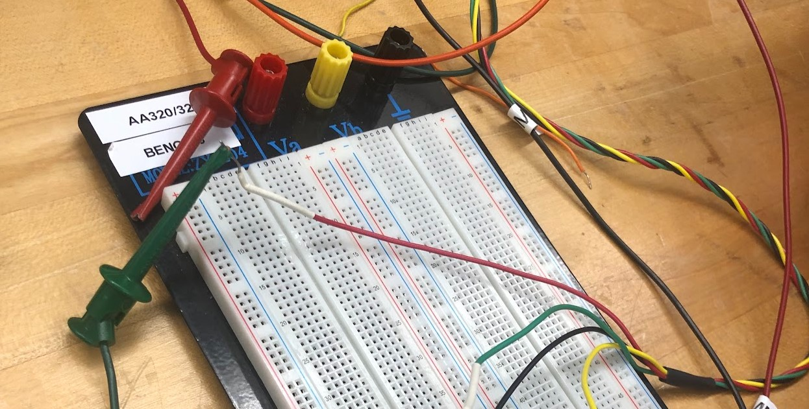
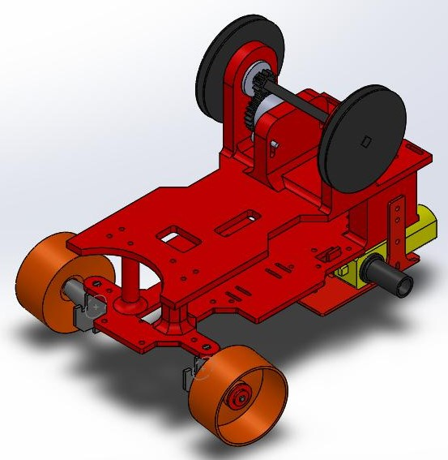

As the main purchaser of supplies for the UW NASA Artemis Lava Tube challenge, I played a pivotal role in the successful execution of our team's entry, the M01-Skylight-Entry rover. We strategically incorporated 3D-printed parts to enhance the rover's capability to navigate the rough terrain of the obstacle course. Additionally, I led the coding efforts for the Raspberry Pi, enabling the rover with a camera for real-time navigation and photo documentation. Collaborating closely with team members, we addressed design challenges, coding complexities, and procured essential supplies to ensure the seamless functioning of our rover throughout the competition.
